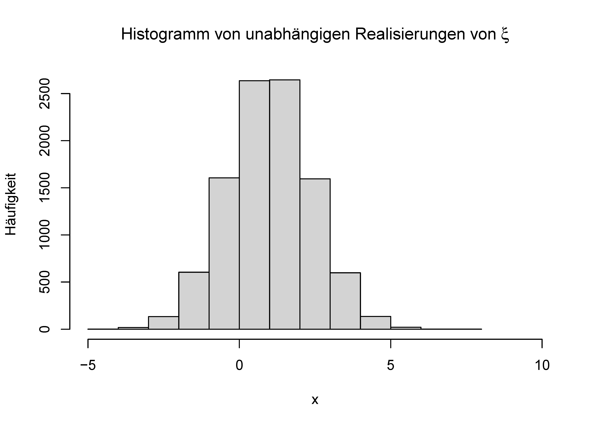
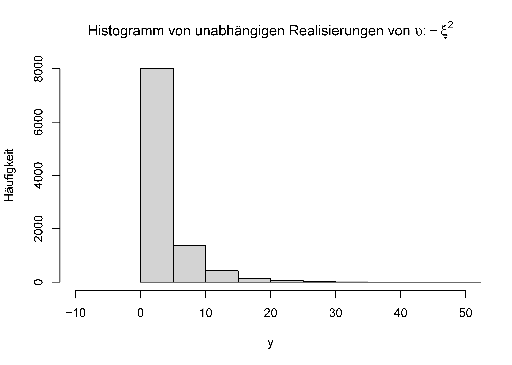

Die Transformation von Zufallsvariablen und ihren Verteilungen ist ein zentrales Thema der probabilistischen Modellierung und in besonderem Maße der Frequentistischen Inferenz. Mit einer Transformation sollen hier die Anwendung von Funktionen auf Zufallsvariablen sowie die arithmetische Verknüpfung mehrerer Zufallsvariablen gemeint sein. Die zentrale Fragestellung dabei ist folgende: “Wenn eine Zufallsvariable \(\xi\) eine durch ihre WDF fest vogegebene Verteilung hat, wie ist dann eine Zufallsvariable \(\upsilon\), die sich durch Transformation von \(\xi\) ergibt, verteilt?” Für die in diesem Kapitel behandelten Fälle gilt dabei, dass man explizit WDFen für die Verteilung der transformierten Zufallsvariable angeben kann. Diese gehören zu den klassischen Resultaten der Frequentistischen Inferenz und sind für das Verständnis von klassischer Frequentistischer Inferenzverfahren wie Konfidenzintervallen und Hypothesentests essentiell.
Intuitiv kann man sich die Transformation einer Zufallsvariable anhand der Transformation ihrer unabhängig und identisch verteilten Realisierungen klar machen. Betrachtet man beispielsweise die Zufallsvariable \(\xi \sim N(0,1)\) und ihre Transformation \(\upsilon := \xi^2\) und sind \(x_1 = 0.10, x_2 = -0.20, x_3 = 0.80\) drei Realisierungen von drei unabhängigen Kopien von \(\xi\), so entspricht dies den Realisierungen \(y_1 = x_1^2 = 0.01, y_2 = x_2^2 = 0.04, y_3 = x_3^2 = 0.64\) von \(\upsilon\). In diesem Beispiel fällt auf, dass \(\upsilon\) keine negativen Werte annimmt, die Verteilung von \(\upsilon\) ordnet negativen Werten daher Wahrscheinlichkeitsdichten von \(0\) zu. Untenstehender R Code simuliert diese Überlegungen. Abbildung 18.1 zeigt das Histogramm der gewonnenen Realisierungen der hier betrachteten Zufallsvariable \(\xi\) und Abbildung 18.2 zeigt das Histogramm der quadrierten Realisierungen von \(\xi\), also unabhängig und identisch verteilte Realisierungen von \(\upsilon\).
# Simulationsspezifikationn =1e4# Anzahl von u.i.v Realisierungen (ZVen)mu =1# Erwartungswertparameter von \xisigsqr =2# Varianzparameter von \xi# Quadrieren einer Zufallsvariablex =rnorm(n, mu, sqrt(sigsqr)) # Realisierungen x_i, i = 1,....,n von \xiy = x^2# Realisierungen y_i = x_i^2 von \upsilon# Ausgabe der ersten acht Werte der Realisierungen von \xi und von \upsilonprint(x[1:8], digits =2)
[1] 1.22 1.69 2.11 1.18 3.14 2.11 -0.77 1.83
print(y[1:8], digits =2)
[1] 1.50 2.85 4.44 1.40 9.89 4.47 0.59 3.35

Abbildung 18.1: Histogramm von 10.000 Realisierungen unabhängig und identisch normalverteilter Zufallsvariablen.

Abbildung 18.2: Histogramm von 10.000 quadrierten Realisierungen unabhängig und identisch normalverteilter Zufallsvariablen.
Grundlegend für die nachfolgenden Betrachtungen ist folgendes Theorem, das wir nicht beweisen wollen.
Theorem 18.1 (Transformation eines Zufallsvektors)\(\xi : \Omega \to \mathcal{X}\) sei ein Zufallsvektor und \(f:\mathcal{X} \to \mathbb{R}^m\) sei eine multivariate vektorwertige Funktion. Dann ist \[\begin{equation}
\upsilon : \Omega \to \mathbb{R}, \omega \mapsto \upsilon(\omega) := (f \circ \xi)(\omega) := f(\xi(\omega))
\end{equation}\] ein Zufallsvektor.
Das Theorem formalisiert die oben etablierte Intuition, dass die Anwendung einer (deterministischen) Funktion auf eine zufällige Größe im Allgemeinen wieder eine zufällige Größe ergibt. In einem Beweis von Theorem 18.1 müsste die Messbarkeit von \(\upsilon\) als Folge der Messbarkeit von \(\xi\) nachgewiesen werden. Im Folgenden ist oft \(\mathcal{X} := \mathbb{R}\) und \(f : \mathbb{R} \to \mathbb{R}\). Wir schreiben in diesem Fall in der Regel einfach \(\upsilon := f(\xi)\) und nennen \(\upsilon\) die transformierte Zufallsvariable. In Kapitel 18.1 betrachten wir drei Theorem zur Transformation von Zufallsvariablen in Abhängigkeit von der Art der betrachteten Funktion \(f\). In Kapitel 18.2 betrachten wir ein Theorem zur Transformation von Zufallsvektoren bei bijektiver Transformationsfunktion. In Kapitel 18.3 schließlich betrachten wir, wie der Verteilungen von Verknüpfungen von Zufallsvariablen analytisch bestimmt werden können.
18.1 Univariate Transformationstheoreme
Dabei liefert Theorem 18.2 eine Formel zur Berechnung der WDF \(p_\upsilon\) von \(\upsilon := f(\xi)\), wenn \(\xi\) eine Zufallsvariable mit WDF \(p_\xi\) ist und \(f\) eine bijektive Funktion ist. Theorem 18.3 gibt weiterhin eine vereinfachte Formel zur Berechnung der WDF \(p_\upsilon\) von \(\upsilon := f(\xi)\) an, wenn \(f\) speziell eine linear-affine Funktion ist. Theorem 18.4 schließlich gibt eine Formel zur Berechnung der WDF \(p_\upsilon\) von \(\upsilon := f(\xi)\) an, wenn \(f\) zumindest in Teilen bijektiv ist.
Theorem 18.2 (Univariate WDF Transformation bei bijektiven Abbildungen)\(\xi\) sei eine Zufallsvariable mit WDF \(p_\xi\) für die \(\mathbb{P}(]a,b[) = 1\) gilt, wobei \(a\) und/oder \(b\) entweder endlich oder unendlich seien. Weiterhin sei \[\begin{equation}
\upsilon := f(\xi),
\end{equation}\] wobei die univariate reellwertige Funktion \(f : ]a,b[ \to \mathbb{R}\) differenzierbar und bijektiv auf \(]a,b[\) sei. \(f(]a,b[)\) sei das Bild von \(]a,b[\) unter \(f\). Schließlich sei \(f^{-1}(y)\) der Wert der Umkehrunktion von \(f(x)\) für \(y \in f(]a,b[)\) und \(f'(x)\) sei die Ableitung von \(f\) an der Stelle \(x\). Dann ist die WDF von \(\upsilon\) gegeben durch \[\begin{equation}
p_\upsilon : \mathbb{R} \to \mathbb{R}_{\ge 0}, y \mapsto p_\upsilon(y) :=
\begin{cases}
\frac{1}{\vert f^{'}\left(f^{-1}(y)\right) \vert}p_\xi\left(f^{-1}(y)\right)
& \mbox{ für } y \in f(]a,b[) \\
0
& \mbox{ für } y \in \mathbb{R} \setminus f(]a,b[).
\end{cases}
\end{equation}\]
Beweis. Wir halten zunächst fest, dass weil \(f\) eine differenzierbare bijektive Funktion auf \(]a,b[\) ist, \(f\) entweder strikt wachsend oder strikt fallend ist. Nehmen wir zunächst an, dass \(f\) auf \(]a,b[\) strikt wachsend ist. Dann ist auch \(f^{-1}\) für alle \(y \in f(]a,b[)\) wachsend, und es gilt \[\begin{equation*}
P_\upsilon(y)
= \mathbb{P}(\upsilon \le y)
= \mathbb{P}\left(f(\xi) \le y\right)
= \mathbb{P}\left(f^{-1}(f(\xi)) \le f^{-1}(y)\right)
= \mathbb{P}\left(\xi \le f^{-1}(y)\right)
= P_\xi\left(f^{-1}(y)\right).
\end{equation*}\]\(P_\upsilon\) ist also differenzierbar an allen Stellen \(y\), an denen sowohl \(f^{-1}\) als auch \(P_\xi\) differenzierbar sind. Mit der Kettenregel und dem Satz von der Umkehrabbildung \((f^{-1}(x))' = 1/f'(f^{-1}(x))\), folgt dann, dass die WDF \(p_\upsilon\) sich ergibt wie folgt: \[\begin{equation*}
p_\upsilon(y)
= \frac{d}{dy}P_\upsilon(y)
= \frac{d}{dy}P_\xi\left(f^{-1}(y)\right)
= p_\xi\left(f^{-1}(y)\right)\frac{d}{dy}f^{-1}(y)
= \frac{1}{f'\left(f^{-1}(y)\right)} p_\xi\left(f^{-1}(y)\right),
\end{equation*}\] Weil \(f^{-1}\) strikt wachsend ist, ist \(d/dy (f^{-1}(y))\) positiv und das Theorem trifft zu. Analog gilt, dass wenn \(f\) auf \(]a,b[\) strikt fallend ist, dann ist auch \(f^{-1}\) für alle \(y \in f(]a,b[)\) fallend und es gilt \[\begin{equation*}
P_\upsilon(y)
= \mathbb{P}(f(\xi) \le y)
= \mathbb{P}\left(f^{-1}(f(\xi)) \ge f^{-1}(y)\right)
= \mathbb{P}\left(\xi \ge f^{-1}(y)\right)
= 1 - P_\xi\left(f^{-1}(y) \right),
\end{equation*}\] Mit der Kettenregel und dem Satz von der Umkehrabbildung folgt dann \[\begin{equation*}
p_\upsilon(y)
= \frac{d}{dy}(1 - P_\upsilon(y))
= -\frac{d}{dy}P_\xi\left(f^{-1}(y)\right)
= -p_\xi\left(f^{-1}(y)\right)\frac{d}{dy}f^{-1}(y)
= -\frac{1}{f'\left(f^{-1}(y)\right)} p_\xi\left(f^{-1}(y)\right).
\end{equation*}\] Weil \(f^{-1}\) strikt fallend ist, ist \(d/dy (f^{-1}(y))\) negativ, so dass \(-d/dy (f^{-1}(y))\) gleich \(|d/dy (f^{-1}(y))|\) ist und das Theorem trifft zu.
Theorem 18.3 (Univariates WDF Transformationstheorem bei linear-affinen Abbildungen)\(\xi\) sei eine Zufallsvariable mit WDF \(p_\xi\) und es sei \[\begin{equation}
\upsilon = f(\xi) \mbox{ mit } f(\xi) := a\xi + b \mbox{ für } a\neq 0.
\end{equation}\] Dann ist die WDF von \(\upsilon\) gegeben durch \[\begin{equation}
p_\upsilon : \mathbb{R} \to \mathbb{R}_{\ge 0}, y \mapsto p_\upsilon(y) :=
\frac{1}{|a|}p_\xi\left(\frac{y-b}{a}\right).
\end{equation}\]
Beweis. Wir halten zunächst fest, dass \[\begin{equation}
f^{-1} : \mathbb{R} \to \mathbb{R}, y \mapsto f^{-1}(y) = \frac{y - b}{a}
\end{equation}\] ist, weil dann \(f \circ f^{-1} = \mbox{id}_{\mathbb{R}}\) gilt, wie man anhand von \[\begin{equation}
f(f^{-1}(x)) = a \left(\frac{x - b}{a}\right) + b = x - b + b = x \mbox{ für alle } x \in \mathbb{R}
\end{equation}\] einsieht. Wir halten weiterhin fest, dass \[\begin{equation}
f' : \mathbb{R} \to \mathbb{R}, x \mapsto f'(x) = \frac{d}{dx}(ax + b) = a.
\end{equation}\] Also folgt mit Theorem 18.2, dass \[\begin{align}
\begin{split}
p_\upsilon : \mathbb{R} \to \mathbb{R}_{\ge 0}, y \mapsto p_\upsilon(y)
& = \frac{1}{\vert f^{'}\left(f^{-1}(y)\right)\vert}p_\xi\left(f^{-1}(y)\right) \\
& = \frac{1}{|a|}p_\xi\left(\frac{y - b}{a}\right).
\end{split}
\end{align}\]
Ein wichtiger Anwendungsfall dieses Theorems ist die in ?sec-transformationen-der-normalverteilung betrachtete \(Z\)-Transformation. Das folgende Theorem, dass wir nicht beweisen wollen, verallgemeinert Theorem 18.2 auf den Fall nur stückweise bijektiver Abbildungen.
Theorem 18.4 (Univariate WDF Transformation bei stückweise bijektiven Abbildungen)\(\xi\) sei eine Zufallsvariable mit Ergebnisraum \(\mathcal{X}\) und WDF \(p_\xi\). Weiterhin sei \[\begin{equation}
\upsilon = f(\xi),
\end{equation}\] wobei \(f\) so beschaffen sei, dass der Ergebnisraum von \(\xi\) in eine endliche Anzahl von Mengen \(\mathcal{X}_1,...,\mathcal{X}_k\) mit einer entsprechenden Anzahl von Mengen \(\mathcal{Y}_1 := f(\mathcal{X}_1), ..., \mathcal{Y}_k := f(\mathcal{X}_k)\) im Ergebnisraum \(\mathcal{Y}\) von \(\upsilon\) partitioniert werden kann (wobei nicht notwendigerweise \(\mathcal{Y}_i \cap \mathcal{Y}_j = \emptyset, 1 \le i,j \le k\) gelten muss), so dass die Abbildung \(f\) für alle \(\mathcal{X}_1,...,\mathcal{X}_k\) bijektiv ist (d.h. \(f\) ist eine bijektive Abbildung). Für \(i = 1,...,k\) bezeichne \(f_i^{-1}\) die Umkehrfunktion von \(f\) auf \(\mathcal{Y}_i\). Schließlich nehmen wir an, dass die Ableitungen \(f_i^{\prime}\) für alle \(i=1,...,k\) existieren und stetig sind. Dann ist eine WDF von \(\upsilon\) durch \[\begin{equation}
p_\upsilon : \mathcal{Y} \to \mathbb{R}_{\ge 0}, y \mapsto p_\upsilon(y) :=
\sum_{i=1}^k 1_{\mathcal{Y}_i} (y) \frac{1}{\vert f^{'}_i(f^{-1}_i(y)) \vert}p_\xi\left(f^{-1}_i(y)\right).
\end{equation}\] gegeben.
Ein wichtiger Anwendungsfall ist die in ?sec-transformationen-der-normalverteilung betrachtete \(\chi^2\)-Transformation.
18.2 Multivariate WDF Transformationstheoreme
Theorem 18.5 liefert eine Formel zur Berechnung der WDF \(p_\upsilon\) von \(\upsilon := f(\xi)\), wenn \(\xi\) ein Zufallsvektor mit WDF \(p_\xi\) ist und \(f\) eine bijektive multivariate vektorwertigeFunktion ist. Es handelt sich dabei um eine direkte Generalisierung von Theorem 18.2 und wir verzichten auf einen Beweis.
Theorem 18.5 (Multivariate WDF Transformation bei bijektiven Abbildungen)\(\xi\) sei ein \(n\)-dimensionaler Zufallsvektor mit Ergebnisraum \(\mathbb{R}^n\) und WDF \(p_\xi\). Weiterhin sei \[\begin{equation}
\upsilon := f(\xi),
\end{equation}\] wobei die multivariate vektorwertige Funktion \(f : \mathbb{R}^n \to \mathbb{R}^n\) differenzierbar und bijektiv auf \(]a,b[\) sei. Schließlich seien \[\begin{equation}
J^f(x)
= \left(\frac{\partial}{\partial x_j}f_i(x)\right)_{1\le i \le n, 1 \le j \le n}
\in \mathbb{R}^{n \times n}
\end{equation}\] die Jacobi-Matrix von \(f\) an der Stelle \(x \in \mathbb{R}^n\), \(|J^f(x)|\) die Determinante von \(J^f(x)\), und es sei \(|J^f(x)| \neq 0\) für alle \(x \in \mathbb{R}^n\). Dann ist eine WDF von \(\upsilon\) durch \[\begin{equation}\label{eq:mpdf_transform}
p_\upsilon : \mathbb{R}^n \to \mathbb{R}_{\ge 0}, y \mapsto p_\upsilon(y) :=
\begin{cases}
\frac{1}{|J^f\left(f^{-1}(y)\right)|}p_\xi\left(f^{-1}(y)\right)
& \mbox{ for } y\in f(\mathbb{R}^n) \\
0
& \mbox{ for } y \in \mathbb{R}^n \setminus f(\mathbb{R}^n)
\end{cases}
\end{equation}\] gegeben.
Wichtige Anwendungsfälle sind die in ?sec-transformationen-der-normalverteilung betrachteten \(T\)- und \(F\)-Transformationen.
18.3 Operationstheoreme
Das folgende sogenannte Konvolutionstheorem liefert eine Formel zur Berechnung der WDF \(p_\upsilon\) von \(\upsilon := \xi_1 + \xi_2\), wenn \(\xi_1\) und \(\xi_2\) zwei Zufallsvariablen mit WDFen \(p_{\xi_1}\) und \(p_{\xi_2}\) sind.
Theorem 18.6 (Summe unabhängiger Zufallsvariablen (Konvolution))\(\xi_1\) und \(\xi_2\) seien zwei kontinuierliche unabhängige Zufallsvariablen mit WDF \(p_{\xi_1}\) und \(p_{\xi_2}\), respektive. \(\upsilon := \xi_1 + \xi_2\) sei die Summe von \(\xi_1\) und \(\xi_2\). Dann ergibt sich eine WDF der Verteilung von \(\upsilon\) als \[\begin{equation}
p_\upsilon(y)
= \int_{-\infty}^\infty p_{\xi_1}(y - x_2)p_{\xi_2}(x_2)\,dx_2
= \int_{-\infty}^\infty p_{\xi_1}(x_1)p_{\xi_2}(y - x_1)\,dx_1
\end{equation}\] Die Formel für die WDF \(p_\upsilon\) heißt oder von \(p_{\xi_1}\) und \(p_{\xi_2}\).
Beweis. Wir nutzen das multivariate WDF Transformationstheorem für bijektive Abbildungen. Dazu definieren wir zunächst \[\begin{equation}
f : \mathbb{R}^2 \to \mathbb{R}^2, x \mapsto f(x) :=
\begin{pmatrix}
x_1 + x_2 \\
x_2
\end{pmatrix}
:=
\begin{pmatrix}
z_1 \\ z_2
\end{pmatrix}
\end{equation}\] Die inverse Funktion von \(f\) ist dann gegeben durch \[\begin{equation}
f : \mathbb{R}^2 \to \mathbb{R}^2, z \mapsto f(z) :=
\begin{pmatrix}
z_1 - x_2 \\
z_2
\end{pmatrix}
\end{equation}\] weil dann \(f \circ f^{-1} = \mbox{id}_{\mathbb{R}^2}\) gilt, wie man anhand von \[\begin{equation}
f^{-1}\left(f(x)\right)
=
f^{-1}
\begin{pmatrix}
x_1 + x_2 \\
x_2
\end{pmatrix}
=
\begin{pmatrix}
x_1 + x_2 - x_2\\
x_2
\end{pmatrix}
=
\begin{pmatrix}
x_1 \\
x_2
\end{pmatrix}
\end{equation}\] einsieht. Die Jacobimatrix von \(f\) ergibt sich zu \[\begin{equation}
J^{f}(x) =
\begin{pmatrix}
\frac{\partial}{\partial x_1} f_1(x) & \frac{\partial}{\partial x_2} f_1(x) \\
\frac{\partial}{\partial x_1} f_2(x) & \frac{\partial}{\partial x_2} f_2(x) \\
\end{pmatrix}
=
\begin{pmatrix}
\frac{\partial}{\partial x_1} (x_1 + x_2)
& \frac{\partial}{\partial x_2} (x_1 + x_2)
\\
\frac{\partial}{\partial x_1} x_2
& \frac{\partial}{\partial x_2} x_2 \\
\end{pmatrix}
=
\begin{pmatrix}
1 & 1 \\
0 & 1 \\
\end{pmatrix}
\end{equation}\] und die Jacobideterminante damit zu \(|J^f(x)| = 1\). Wir halten weiterhin fest, dass die Unabhängigkeit von \(\xi_1\) und \(\xi_2\) impliziert, dass \[\begin{equation}
p_{\xi_1,\xi_2}(x_1,x_2) = p_{\xi_1}(x_1)p_{\xi_2}(x_2)
\end{equation}\] impliziert. Einsetzen und Integration hinsichtlich \(x_2\) ergibt dann ergibt dann für \(z \in f(\mathbb{R}^2)\)\[\begin{align}
\begin{split}
p_\zeta(z)
& = \frac{1}{|J^f\left(f^{-1}(z)\right)|}p_\xi\left(f^{-1}(z)\right) \\
& = \frac{1}{1}p_{\xi_1,\xi_2}\left(z_1 - x_2, x_2\right) \\
& = p_{\xi_1}(z_1 - x_2)p_{\xi_2}(x_2)
\end{split}
\end{align}\] Integration über \(x_2\) ergibt dann eine WDF für die marginale Verteilung von \(\zeta_1\)\[\begin{align}
\begin{split}
p_{\zeta_1}(z_1)
& = \int_{-\infty}^{\infty} p_{\xi_1}(z_1 - x_2)p_{\xi_2}(x_2)\,dx_2
\end{split}
\end{align}\] Mit \(\zeta_1 = \xi_1 + \xi_2 = \upsilon\) ergibt sich dann die erste Form des Konvlutionstheorems zu \[\begin{align}
p_\upsilon(y)
& = \int_{-\infty}^{\infty} p_{\xi_1}(y - x_2)p_{\xi_2}(x_2)\,dx_2.
\end{align}\]
Wichtige in ?sec-transformationen-der-normalverteilung betrachtete Anwendungsfällte sind die Summentransformation und die Mittelwerttransformation.